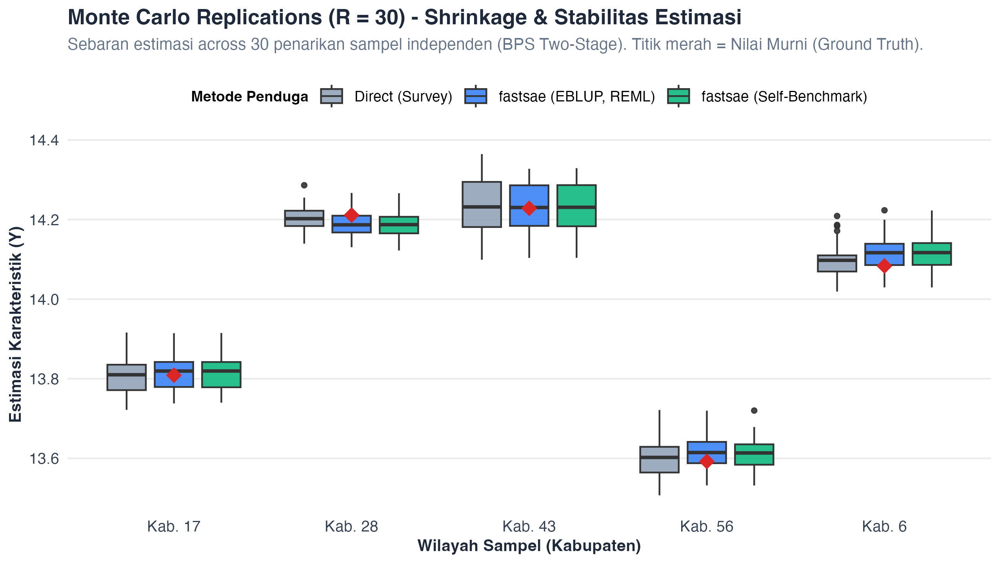

Visualisasi Interaktif Trade-Off Model
Analisis perbandingan antara kecepatan komputasi, presisi estimasi, dan efisiensi relatif model
Waktu Komputasi vs Efisiensi Relatif (Pareto Frontier)
Makin ke atas dan kiri makin unggulPerbandingan Efisiensi Relatif (%)
Penduga Langsung (Direct) = 100%Sebaran Replikasi Monte Carlo (R=30) & Efek Penyusutan (Shrinkage)
Titik Merah = Nilai Murni Populasi (Ground Truth)Perbandingan sebaran estimasi dari 30 penarikan sampel independen (BPS Two-Stage). Penduga Langsung (abu-abu) menyebar lebar mencerminkan varians sampling yang besar, sedangkan model SAE fastsae (biru & hijau) secara konsisten menyusutkan estimasi ke arah nilai Ground Truth dengan stabilitas tinggi.

Tabel Evaluasi Model per Dataset
Setiap dataset menguji karakteristik struktur khusus; peringkat dipisahkan dan nilai terbaik ditandai hijau lembut.
Linear Dasar
Penyusutan (shrinkage) awal untuk menguji efisiensi EBLUP dan Hierarchical Bayes dibanding Penduga Langsung.
| Peringkat | Model / Paket | Efisiensi Relatif (%) | RRMSE (%) | ARB (%) | Korelasi | RAM Puncak | Waktu |
|---|---|---|---|---|---|---|---|
| #1 | fastsae (eblup_fh, REML) | 111.3% | 0.38% | 0.31% | 0.9906 | 2.0 MB | 0.020s |
| #2 | fastsae (hb_area, INLA) | 111.3% | 0.38% | 0.31% | 0.9906 | 136.8 MB | 1.920s |
| #3 | hbsae (fSAE.Area, Hierarchical Bayes) | 111.3% | 0.38% | 0.31% | 0.9906 | 8.5 MB | 0.090s |
| #4 | sae (eblupFH, REML) | 111.3% | 0.38% | 0.31% | 0.9906 | 3.2 MB | 0.000s |
| #5 | fastsaegpu (hb_area, GPU-MCMC) | 110.9% | 0.38% | 0.31% | 0.9906 | 160.0 MB | 14.040s |
| #6 | fastsae (hb_area, INLA, self benchmark) | 110.8% | 0.38% | 0.31% | 0.9906 | 14.5 MB | 1.900s |
| #7 | fastsae (eblup_fh, REML, self benchmark) | 110.4% | 0.38% | 0.31% | 0.9905 | 2.5 MB | 0.000s |
| #8 | fastsaegpu (merf_area, ML-Random Forest) | 101.9% | 0.40% | 0.32% | 0.9898 | 44.6 MB | 0.360s |
| #9 | survey (direct, Taylor) | 100.0% | 0.41% | 0.32% | 0.9897 | 0.0 MB | 0.000s |
| Peringkat | Model / Paket | Efisiensi Relatif (%) | RRMSE (%) | ARB (%) | Korelasi | RAM Puncak | Waktu |
|---|---|---|---|---|---|---|---|
| #1 | hbsae (fSAE.Area, Hierarchical Bayes) | 108.0% | 0.39% | 0.12% | 0.9988 | 8.0 MB | 0.038s |
| #2 | fastsae (eblup_fh, REML) | 107.7% | 0.39% | 0.12% | 0.9988 | 8.0 MB | 0.001s |
| #3 | sae (eblupFH, REML) | 107.7% | 0.39% | 0.12% | 0.9988 | 8.0 MB | 0.002s |
| #4 | fastsae (eblup_fh, REML, self benchmark) | 107.3% | 0.39% | 0.12% | 0.9988 | 8.0 MB | 0.001s |
| #5 | survey (direct, Taylor) | 100.0% | 0.40% | 0.06% | 0.9997 | 8.0 MB | 0.000s |
Proporsi Terbatas (0,1)
Menguji model Beta Stan HMC dan transformasi logit agar estimasi tidak bernilai negatif atau melebihi 100%.
| Peringkat | Model / Paket | Efisiensi Relatif (%) | RRMSE (%) | ARB (%) | Korelasi | Pelanggaran Batas (<0 / >1) | RAM Puncak | Waktu |
|---|---|---|---|---|---|---|---|---|
| #1 | tipsae (fit_sae, Beta Stan HMC) | 156.6% | 23.46% | 18.25% | 0.9388 | 0 | 185.0 MB | 1.270s |
| #2 | tipsae (fit_sae, Flexible Beta Stan HMC) | 150.3% | 24.80% | 18.84% | 0.9376 | 0 | 190.0 MB | 4.420s |
| #3 | tipsae (fit_sae, ExtBeta Stan HMC) | 149.0% | 26.79% | 19.31% | 0.9362 | 0 | 195.0 MB | 2.350s |
| #4 | hbsae (fSAE.Area, Hierarchical Bayes) | 120.5% | 29.33% | 20.80% | 0.9148 | 0 | 8.5 MB | 0.030s |
| #5 | fastsaegpu (merf_area, ML-Random Forest) | 119.6% | 34.91% | 23.62% | 0.9173 | 0 | 41.0 MB | 0.320s |
| #6 | fastsae (hb_area, INLA) | 119.3% | 29.20% | 20.70% | 0.9139 | 0 | 51.0 MB | 1.220s |
| #7 | fastsae (eblup_fh, REML) | 118.1% | 29.15% | 20.71% | 0.9130 | 0 | 3.6 MB | 0.000s |
| #8 | fastsaegpu (hb_area, GPU-MCMC) | 117.5% | 29.15% | 20.63% | 0.9126 | 0 | 39.2 MB | 6.410s |
| #9 | fastsae (hb_area, INLA, self benchmark) | 107.7% | 29.99% | 21.89% | 0.9049 | 0 | 14.5 MB | 1.250s |
| #10 | survey (direct, Taylor) | 100.0% | 36.16% | 24.67% | 0.9192 | 0 | 0.5 MB | 0.000s |
| #11 | fastsae (eblup_fh, REML, self benchmark) | 99.4% | 30.52% | 22.62% | 0.8978 | 0 | 2.5 MB | 0.000s |
| Peringkat | Model / Paket | Efisiensi Relatif (%) | RRMSE (%) | ARB (%) | Korelasi | Pelanggaran Batas (<0 / >1) | RAM Puncak | Waktu |
|---|---|---|---|---|---|---|---|---|
| #1 | hbsae (fSAE.Area, Hierarchical Bayes) | 122.4% | 27.35% | 8.53% | 0.9606 | 0 | 8.0 MB | 0.027s |
| #2 | fastsae (eblup_fh, REML) | 120.2% | 27.18% | 8.79% | 0.9575 | 0 | 8.0 MB | 0.001s |
| #3 | fastsae (eblup_fh, REML, self benchmark) | 104.0% | 30.87% | 8.24% | 0.9627 | 0 | 8.0 MB | 0.001s |
| #4 | survey (direct, Taylor) | 100.0% | 35.75% | 5.43% | 0.9959 | 0 | 8.0 MB | 0.000s |
Dimensi Tinggi (Sparse)
Menguji regularisasi, penyusutan horseshoe, dan penapisan fitur untuk mencegah lewat-tata (overfitting).
| Peringkat | Model / Paket | Efisiensi Relatif (%) | RRMSE (%) | ARB (%) | Korelasi | RAM Puncak | Waktu |
|---|---|---|---|---|---|---|---|
| #1 | fastsae (eblup_fh, REML, self benchmark) | 111.8% | 0.53% | 0.43% | 0.9984 | 2.5 MB | 0.000s |
| #2 | fastsae (hb_area, INLA, self benchmark) | 111.5% | 0.53% | 0.43% | 0.9984 | 14.5 MB | 1.290s |
| #3 | fastsae (eblup_fh, REML) | 111.1% | 0.53% | 0.43% | 0.9984 | 1.0 MB | 0.000s |
| #4 | fastsae (hb_area, INLA) | 111.1% | 0.53% | 0.43% | 0.9984 | 60.5 MB | 1.280s |
| #5 | sae (eblupFH, REML) | 111.1% | 0.53% | 0.43% | 0.9984 | 3.2 MB | 0.000s |
| #6 | hbsae (fSAE.Area, Hierarchical Bayes) | 111.0% | 0.53% | 0.43% | 0.9984 | 8.5 MB | 0.060s |
| #7 | fastsaegpu (hb_area, GPU-MCMC) | 110.6% | 0.53% | 0.43% | 0.9984 | 29.2 MB | 9.520s |
| #8 | survey (direct, Taylor) | 100.0% | 0.56% | 0.46% | 0.9982 | 0.0 MB | 0.000s |
| #9 | fastsaegpu (merf_area, ML-Random Forest) | 99.7% | 0.56% | 0.46% | 0.9982 | 21.9 MB | 0.230s |
| Peringkat | Model / Paket | Efisiensi Relatif (%) | RRMSE (%) | ARB (%) | Korelasi | RAM Puncak | Waktu |
|---|---|---|---|---|---|---|---|
| #1 | hbsae (fSAE.Area, Hierarchical Bayes) | 103.5% | 0.57% | 0.13% | 0.9999 | 8.0 MB | 0.061s |
| #2 | fastsae (eblup_fh, REML, self benchmark) | 103.2% | 0.57% | 0.13% | 0.9999 | 8.0 MB | 0.003s |
| #3 | fastsae (eblup_fh, REML) | 103.1% | 0.57% | 0.13% | 0.9998 | 8.0 MB | 0.002s |
| #4 | sae (eblupFH, REML) | 103.1% | 0.57% | 0.13% | 0.9998 | 8.0 MB | 0.002s |
| #5 | survey (direct, Taylor) | 100.0% | 0.58% | 0.09% | 0.9999 | 8.0 MB | 0.000s |
Nonlinear Kompleks
Menguji ketahanan model nonparametrik MERF ketika model linear Fay-Herriot mengalami kesalahan spesifikasi.
| Peringkat | Model / Paket | Efisiensi Relatif (%) | RRMSE (%) | ARB (%) | Korelasi | RAM Puncak | Waktu |
|---|---|---|---|---|---|---|---|
| #1 | fastsaegpu (merf_area, ML-Random Forest) | 101.2% | 0.57% | 0.44% | 0.9992 | 38.4 MB | 0.380s |
| #2 | survey (direct, Taylor) | 100.0% | 0.57% | 0.45% | 0.9992 | 0.0 MB | 0.000s |
| #3 | fastsae (eblup_fh, REML, self benchmark) | 99.5% | 0.58% | 0.45% | 0.9992 | 2.5 MB | 0.000s |
| #4 | fastsae (eblup_fh, REML) | 99.3% | 0.58% | 0.45% | 0.9992 | 0.4 MB | 0.000s |
| #5 | hbsae (fSAE.Area, Hierarchical Bayes) | 99.3% | 0.58% | 0.45% | 0.9992 | 8.5 MB | 0.030s |
| #6 | sae (eblupFH, REML) | 99.3% | 0.58% | 0.45% | 0.9992 | 3.2 MB | 0.000s |
| #7 | fastsae (hb_area, INLA) | 99.2% | 0.58% | 0.45% | 0.9992 | 48.0 MB | 1.330s |
| #8 | fastsae (hb_area, INLA, self benchmark) | 99.2% | 0.58% | 0.45% | 0.9992 | 14.5 MB | 1.270s |
| #9 | fastsaegpu (hb_area, GPU-MCMC) | 98.8% | 0.58% | 0.45% | 0.9992 | 28.7 MB | 18.880s |
| Peringkat | Model / Paket | Efisiensi Relatif (%) | RRMSE (%) | ARB (%) | Korelasi | RAM Puncak | Waktu |
|---|---|---|---|---|---|---|---|
| #1 | fastsae (eblup_fh, REML, self benchmark) | 100.3% | 0.39% | 0.06% | 1.0000 | 8.0 MB | 0.001s |
| #2 | fastsae (eblup_fh, REML) | 100.2% | 0.39% | 0.06% | 1.0000 | 8.0 MB | 0.001s |
| #3 | hbsae (fSAE.Area, Hierarchical Bayes) | 100.2% | 0.39% | 0.06% | 1.0000 | 8.0 MB | 0.026s |
| #4 | sae (eblupFH, REML) | 100.2% | 0.39% | 0.06% | 1.0000 | 8.0 MB | 0.001s |
| #5 | survey (direct, Taylor) | 100.0% | 0.39% | 0.06% | 1.0000 | 8.0 MB | 0.000s |
Spasial SAR
Pemanfaatan korelasi spasial antarwilayah melalui Spatial Fay-Herriot (SEBLUP) dan model INLA Besag.
| Peringkat | Model / Paket | Efisiensi Relatif (%) | RRMSE (%) | ARB (%) | Korelasi | RAM Puncak | Waktu |
|---|---|---|---|---|---|---|---|
| #1 | fastsae (hb_area, INLA Besag, self benchmark) | 127.4% | 0.41% | 0.34% | 0.9953 | 16.5 MB | 1.210s |
| #2 | sae (eblupSFH, Spatial SAR) | 126.4% | 0.42% | 0.34% | 0.9953 | 12.0 MB | 0.020s |
| #3 | fastsaegpu (hb_area, GPU-MCMC) | 123.4% | 0.42% | 0.34% | 0.9951 | 28.7 MB | 6.250s |
| #4 | fastsae (eblup_fh, REML) | 122.4% | 0.42% | 0.34% | 0.9951 | 0.4 MB | 0.000s |
| #5 | fastsae (hb_area, INLA) | 122.4% | 0.42% | 0.34% | 0.9951 | 46.9 MB | 1.260s |
| #6 | sae (eblupFH, REML) | 122.4% | 0.42% | 0.34% | 0.9951 | 3.2 MB | 0.000s |
| #7 | hbsae (fSAE.Area, Hierarchical Bayes) | 122.1% | 0.42% | 0.34% | 0.9951 | 8.5 MB | 0.030s |
| #8 | fastsae (eblup_sfh, Spatial SAR, self benchmark) | 120.8% | 0.43% | 0.35% | 0.9951 | 12.5 MB | 0.010s |
| #9 | fastsae (hb_area, INLA, self benchmark) | 120.1% | 0.43% | 0.35% | 0.9951 | 14.5 MB | 1.270s |
| #10 | fastsae (eblup_fh, REML, self benchmark) | 117.5% | 0.43% | 0.35% | 0.9950 | 2.5 MB | 0.000s |
| #11 | fastsaegpu (merf_area, ML-Random Forest) | 100.8% | 0.47% | 0.38% | 0.9940 | 36.7 MB | 0.310s |
| #12 | survey (direct, Taylor) | 100.0% | 0.47% | 0.38% | 0.9940 | 0.0 MB | 0.000s |
| Peringkat | Model / Paket | Efisiensi Relatif (%) | RRMSE (%) | ARB (%) | Korelasi | RAM Puncak | Waktu |
|---|---|---|---|---|---|---|---|
| #1 | sae (eblupSFH, Spatial SAR) | 107.5% | 0.46% | 0.12% | 0.9993 | 8.0 MB | 0.014s |
| #2 | hbsae (fSAE.Area, Hierarchical Bayes) | 107.1% | 0.46% | 0.11% | 0.9994 | 8.0 MB | 0.031s |
| #3 | fastsae (eblup_fh, REML) | 106.9% | 0.46% | 0.11% | 0.9994 | 8.0 MB | 0.002s |
| #4 | sae (eblupFH, REML) | 106.9% | 0.46% | 0.11% | 0.9994 | 8.0 MB | 0.002s |
| #5 | fastsae (eblup_sfh, Spatial SAR, self benchmark) | 106.7% | 0.46% | 0.11% | 0.9993 | 8.0 MB | 0.011s |
| #6 | fastsae (eblup_fh, REML, self benchmark) | 106.1% | 0.46% | 0.11% | 0.9994 | 8.0 MB | 0.001s |
| #7 | survey (direct, Taylor) | 100.0% | 0.48% | 0.07% | 0.9998 | 8.0 MB | 0.000s |
Panel Spasiotemporal
Penyaringan dinamik runtut waktu dan pemanfaatan kekuatan informasi lintas ruang dan waktu.
| Peringkat | Model / Paket | Efisiensi Relatif (%) | RRMSE (%) | ARB (%) | Korelasi | RAM Puncak | Waktu |
|---|---|---|---|---|---|---|---|
| #1 | fastsaegpu (hb_area, GPU-MCMC) | 111.0% | 0.47% | 0.37% | 0.9914 | 28.7 MB | 20.260s |
| #2 | fastsae (eblup_fh, REML) | 110.6% | 0.47% | 0.37% | 0.9914 | 0.4 MB | 0.000s |
| #3 | fastsae (hb_area, INLA) | 110.6% | 0.47% | 0.37% | 0.9914 | 51.5 MB | 1.310s |
| #4 | hbsae (fSAE.Area, Hierarchical Bayes) | 110.6% | 0.47% | 0.37% | 0.9914 | 8.5 MB | 0.070s |
| #5 | sae (eblupFH, REML) | 110.6% | 0.47% | 0.37% | 0.9914 | 3.2 MB | 0.040s |
| #6 | fastsae (eblup_fh, REML, self benchmark) | 110.6% | 0.47% | 0.37% | 0.9914 | 2.5 MB | 0.000s |
| #7 | fastsae (hb_area, INLA, self benchmark) | 110.6% | 0.47% | 0.37% | 0.9914 | 14.5 MB | 1.250s |
| #8 | fastsaegpu (merf_area, ML-Random Forest) | 103.9% | 0.49% | 0.38% | 0.9909 | 52.1 MB | 1.170s |
| #9 | survey (direct, Taylor) | 100.0% | 0.50% | 0.39% | 0.9908 | 0.0 MB | 0.000s |
| Peringkat | Model / Paket | Efisiensi Relatif (%) | RRMSE (%) | ARB (%) | Korelasi | RAM Puncak | Waktu |
|---|---|---|---|---|---|---|---|
| #1 | hbsae (fSAE.Area, Hierarchical Bayes) | 107.4% | 0.44% | 0.14% | 0.9994 | 8.0 MB | 0.031s |
| #2 | fastsae (eblup_fh, REML) | 107.2% | 0.45% | 0.14% | 0.9994 | 8.0 MB | 0.001s |
| #3 | sae (eblupFH, REML) | 107.2% | 0.45% | 0.14% | 0.9994 | 8.0 MB | 0.002s |
| #4 | fastsae (eblup_fh, REML, self benchmark) | 106.6% | 0.45% | 0.14% | 0.9994 | 8.0 MB | 0.001s |
| #5 | survey (direct, Taylor) | 100.0% | 0.46% | 0.07% | 0.9998 | 8.0 MB | 0.000s |
Pencilan Ekstrem
Menguji ketahanan estimasi M-robust, Huber EBLUP (saeRobust), dan penyusutan berekor tebal terhadap titik pengungkit.
| Peringkat | Model / Paket | Efisiensi Relatif (%) | RRMSE (%) | ARB (%) | Korelasi | RRMSE Pencilan | RAM Puncak | Waktu |
|---|---|---|---|---|---|---|---|---|
| #1 | saeRobust (rfh, Robust Huber) | 107.7% | 0.57% | 0.46% | 0.9945 | 0.27% | 18.0 MB | 0.130s |
| #2 | fastsae (hb_area, INLA) | 103.2% | 0.58% | 0.46% | 0.9943 | 0.28% | 46.8 MB | 1.200s |
| #3 | fastsae (eblup_fh, REML) | 103.1% | 0.58% | 0.46% | 0.9943 | 0.28% | 0.3 MB | 0.000s |
| #4 | hbsae (fSAE.Area, Hierarchical Bayes) | 103.1% | 0.58% | 0.46% | 0.9943 | 0.27% | 8.5 MB | 0.020s |
| #5 | sae (eblupFH, REML) | 103.1% | 0.58% | 0.46% | 0.9943 | 0.28% | 3.2 MB | 0.000s |
| #6 | fastsae (hb_area, INLA, self benchmark) | 103.1% | 0.58% | 0.46% | 0.9943 | 0.27% | 14.5 MB | 1.240s |
| #7 | fastsaegpu (hb_area, GPU-MCMC) | 103.0% | 0.58% | 0.46% | 0.9943 | 0.27% | 28.6 MB | 9.930s |
| #8 | fastsae (eblup_fh, REML, self benchmark) | 103.0% | 0.58% | 0.46% | 0.9943 | 0.27% | 2.5 MB | 0.000s |
| #9 | fastsaegpu (merf_area, ML-Random Forest) | 102.9% | 0.58% | 0.46% | 0.9944 | 0.30% | 36.8 MB | 0.320s |
| #10 | survey (direct, Taylor) | 100.0% | 0.59% | 0.47% | 0.9943 | 0.36% | 0.1 MB | 0.000s |
| Peringkat | Model / Paket | Efisiensi Relatif (%) | RRMSE (%) | ARB (%) | Korelasi | RRMSE Pencilan | RAM Puncak | Waktu |
|---|---|---|---|---|---|---|---|---|
| #1 | saeRobust (rfh, Robust Huber) | 109.5% | 0.49% | 0.13% | 0.9996 | - | 8.0 MB | 0.104s |
| #2 | fastsae (eblup_fh, REML) | 101.0% | 0.51% | 0.07% | 0.9998 | - | 8.0 MB | 0.001s |
| #3 | hbsae (fSAE.Area, Hierarchical Bayes) | 101.0% | 0.51% | 0.07% | 0.9998 | - | 8.0 MB | 0.027s |
| #4 | sae (eblupFH, REML) | 101.0% | 0.51% | 0.07% | 0.9998 | - | 8.0 MB | 0.002s |
| #5 | fastsae (eblup_fh, REML, self benchmark) | 100.9% | 0.51% | 0.07% | 0.9998 | - | 8.0 MB | 0.001s |
| #6 | survey (direct, Taylor) | 100.0% | 0.51% | 0.07% | 0.9999 | - | 8.0 MB | 0.000s |
Hierarki Bertingkat
Pemanfaatan informasi bertingkat antartingkat hierarki administratif.
| Peringkat | Model / Paket | Efisiensi Relatif (%) | RRMSE (%) | ARB (%) | Korelasi | RAM Puncak | Waktu |
|---|---|---|---|---|---|---|---|
| #1 | fastsae (eblup_twofold, REML, self benchmark) | 107.1% | 0.44% | 0.34% | 0.9937 | 4.8 MB | 0.000s |
| #2 | fastsae (hb_twofold, INLA) | 106.9% | 0.45% | 0.34% | 0.9937 | 12.5 MB | 12.950s |
| #3 | fastsae (eblup_twofold, REML) | 106.8% | 0.45% | 0.34% | 0.9937 | 4.5 MB | 0.000s |
| #4 | fastsae (eblup_fh, REML, self benchmark) | 103.1% | 0.45% | 0.36% | 0.9935 | 2.5 MB | 0.000s |
| #5 | fastsae (hb_area, INLA, self benchmark) | 102.7% | 0.45% | 0.36% | 0.9934 | 14.5 MB | 1.240s |
| #6 | hbsae (fSAE.Area, Hierarchical Bayes) | 102.3% | 0.45% | 0.36% | 0.9934 | 8.5 MB | 0.030s |
| #7 | fastsae (eblup_fh, REML) | 102.1% | 0.45% | 0.36% | 0.9934 | 0.3 MB | 0.000s |
| #8 | sae (eblupFH, REML) | 102.1% | 0.45% | 0.36% | 0.9934 | 3.2 MB | 0.000s |
| #9 | fastsae (hb_area, INLA) | 102.0% | 0.46% | 0.36% | 0.9934 | 46.7 MB | 1.250s |
| #10 | fastsaegpu (merf_area, ML-Random Forest) | 101.7% | 0.46% | 0.36% | 0.9934 | 36.8 MB | 0.310s |
| #11 | fastsaegpu (hb_area, GPU-MCMC) | 101.3% | 0.46% | 0.36% | 0.9933 | 28.5 MB | 6.390s |
| #12 | survey (direct, Taylor) | 100.0% | 0.46% | 0.36% | 0.9934 | 0.0 MB | 0.000s |
| Peringkat | Model / Paket | Efisiensi Relatif (%) | RRMSE (%) | ARB (%) | Korelasi | RAM Puncak | Waktu |
|---|---|---|---|---|---|---|---|
| #1 | fastsae (eblup_twofold, REML) | 112.1% | 0.42% | 0.15% | 0.9988 | 8.0 MB | 0.001s |
| #2 | fastsae (eblup_twofold, REML, self benchmark) | 111.0% | 0.42% | 0.14% | 0.9988 | 8.0 MB | 0.002s |
| #3 | hbsae (fSAE.Area, Hierarchical Bayes) | 108.4% | 0.42% | 0.13% | 0.9991 | 8.0 MB | 0.032s |
| #4 | fastsae (eblup_fh, REML) | 108.0% | 0.42% | 0.13% | 0.9991 | 8.0 MB | 0.001s |
| #5 | sae (eblupFH, REML) | 108.0% | 0.42% | 0.13% | 0.9991 | 8.0 MB | 0.002s |
| #6 | fastsae (eblup_fh, REML, self benchmark) | 107.2% | 0.43% | 0.13% | 0.9991 | 8.0 MB | 0.001s |
| #7 | survey (direct, Taylor) | 100.0% | 0.44% | 0.06% | 0.9998 | 8.0 MB | 0.000s |
Validasi Properti Benchmarking (Konsistensi Agregat Wilayah)
Salah satu syarat krusial penerapan SAE di Badan Pusat Statistik (BPS) adalah benchmarking property: jumlah estimasi area kecil (kabupaten/kota) harus tepat sama dengan angka resmi estimasi langsung (Direct) tingkat wilayah atasnya (provinsi/nasional). Tanpa benchmarking, model EBLUP standar menghasilkan deviasi agregat. Fitur self_benchmark = TRUE pada paket fastsae menjamin konsistensi matematis secara langsung dalam estimasi parameter tanpa memerlukan penyesuaian pro-rata post-hoc.
| Karakteristik Dataset | Target Langsung (∑ Yddir) | EBLUP Standar (∑ θ̂d) | Deviasi Standar | fastsae (∑ θ̂dsb) | Deviasi fastsae | Status Konsistensi |
|---|---|---|---|---|---|---|
| ds01-linear (Linear Dasar) | 842.9743 | 842.9206 | -0.0537 | 842.9743 | 0.000000 | Tepat 100% |
| ds02-rate (Proporsi Terbatas) | 8.5002 | 8.2895 | -0.2107 | 8.5002 | 0.000000 | Tepat 100% |
| ds04-nonlinear (Nonlinear Kompleks) | 595.6068 | 595.6023 | -0.0045 | 595.6068 | 0.000000 | Tepat 100% |
| ds05-spatial (Spasial SAR) | 705.0020 | 705.1440 | +0.1421 | 705.0020 | 0.000000 | Tepat 100% |
| ds07-outliers (Pencilan Ekstrem) | 634.1209 | 634.1389 | +0.0179 | 634.1209 | 0.000000 | Tepat 100% |
| ds08-nested (Hierarki Bertingkat) | 674.0150 | 674.0263 | +0.0113 | 674.0150 | 0.000000 | Tepat 100% |
Metodologi Sampling dan Nilai Populasi (Ground Truth)
Seluruh set data tolok ukur dibangkitkan dari populasi sintetis (~120.000 rumah tangga) menggunakan rancangan Two-Stage Stratified Cluster Sampling yang mengadopsi standar Survei Sosial Ekonomi Nasional (Susenas) Badan Pusat Statistik (BPS) Indonesia, dievaluasi terhadap nilai murni Ground Truth populasi.
1 Tahap 1: Pemilihan Blok Sensus (PSU)
Stratifikasi perkotaan dan perdesaan di setiap kabupaten. Blok Sensus (BS) dipilih secara Probability Proportional to Size (PPS) tanpa pengembalian berdasarkan jumlah rumah tangga muatan.
2 Tahap 2: Pemilihan Rumah Tangga (SSU)
Penarikan sampel sistematik tepat 10 rumah tangga per BS terpilih dengan nomor acak awal (random start). Peluang inklusi bersyarat:
3 Tahap 3: Pembobotan dan Varians Taylor
Bobot sampel akhir (FWT) memperhitungkan efek pengelompokan (clustering). Varians penduga langsung dihitung melalui Linearitas Deret Taylor (survey::svydesign), menghasilkan efek desain realistis (Deff > 1).
4 Tahap 4: Replikasi Monte Carlo (R=30)
Didukung modul replikasi (engine/run_mc_replications.R) untuk menghitung Empirical MSE, Empirical Bias, dan RelEff dari penarikan sampel berulang secara independen.